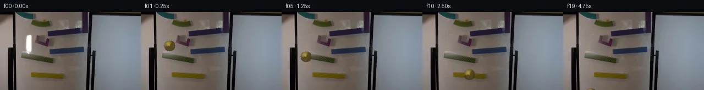

![首帧]()

Round 00
2026-11-05T22:47:29.278837+00:00像素候选变化代码 +417/−0inspection 更新
pixels d6ea68f1561b76d8 · code 8a8721f232b97407
查看本轮 generate.py 真实 diff
--- previous/generate.py +++ current/generate.py @@ -0,0 +1,417 @@ +#!/usr/bin/env python3 +"""PixelWorld-Text: Generate 20-frame marble-run animation. + +A yellow glass marble slides down magnetic ramps on a whiteboard. +Frame 00 equals first_frame.png exactly. All subsequent frames +show the marble progressing along a physically-plausible trajectory. +""" + +import sys +from pathlib import Path + +import numpy as np +from PIL import Image + +# ── helpers from artifact_io ────────────────────────────────────────── +sys.path.insert(0, ".") +from artifact_io import save # noqa: E402 + + +# ═══════════════════════════════════════════════════════════════════════ +# 1. Background creation – remove the marble from frame 00 +# ═══════════════════════════════════════════════════════════════════════ + +def create_background(arr: np.ndarray) -> np.ndarray: + """Inpaint the marble region using horizontal interpolation. + + The marble occupies roughly x=[46, 58], y=[42, 77]. + We fill each row in that band by linear interpolation between + neighbouring columns on the left (x=44-45) and right (x=59-60). + """ + bg = arr.copy() + h, w = bg.shape[:2] + + y0, y1 = 42, 78 # rows occupied by the marble (inclusive) + x0, x1 = 46, 59 # cols occupied by the marble (inclusive) + + for y in range(y0, min(y1, h)): + # average of 2-pixel strips just outside the marble + left_color = bg[y, 44:46].mean(axis=0).astype(np.float64) + right_color = bg[y, 59:61].mean(axis=0).astype(np.float64) + + for xi, x in enumerate(range(x0, min(x1, w))): + t = (xi + 0.5) / (x1 - x0) # 0 at left edge → 1 at right + blended = (1 - t) * left_color + t * right_color + # add a tiny bit of noise to avoid visible banding + noise = np.random.default_rng(y * 256 + x).uniform(-0.5, 0.5, 3) + bg[y, x] = np.clip(blended + noise, 0, 255).astype(np.uint8) + + return bg + + +# ═══════════════════════════════════════════════════════════════════════ +# 2. Marble sprite – a yellow glass sphere with specular highlight +# ═══════════════════════════════════════════════════════════════════════ + +def create_marble_sprite(radius: int = 10): + """Return (rgba_sprite, alpha_mask) for a yellow glass marble. + + The sprite is a 2*radius+1 square. The alpha mask is a float + array 0-1 used for compositing. + """ + size = 2 * radius + 1 + sprite = np.zeros((size, size, 3), dtype=np.float64) + alpha = np.zeros((size, size), dtype=np.float64) + + cy = cx = radius + for dy in range(size): + for dx in range(size): + dist = np.sqrt((dx - cx) ** 2 + (dy - cy) ** 2) + if dist > radius: + continue # fully transparent + + # normalised distance from centre (0 = centre, 1 = edge) + nd = dist / radius + + # --- base colour: warm amber / yellow glass --- + # The "yellow glass" leans toward a golden-amber tone. + base_r = 235 + base_g = 200 + base_b = 90 + + # --- sphere shading (Lambertian + ambient) --- + # light direction: upper-left + lx, ly, lz = -0.4, -0.55, 0.73 + ln = np.sqrt(lx * lx + ly * ly + lz * lz) + lx, ly, lz = lx / ln, ly / ln, lz / ln + … diff truncated; 330 more lines …